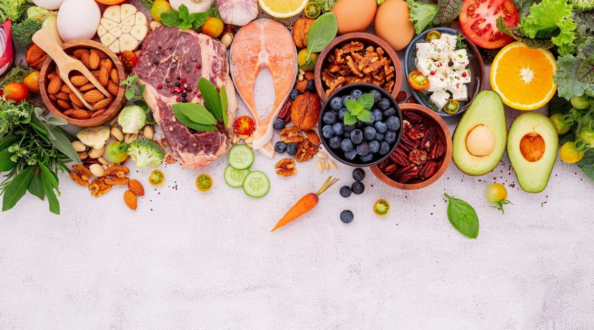
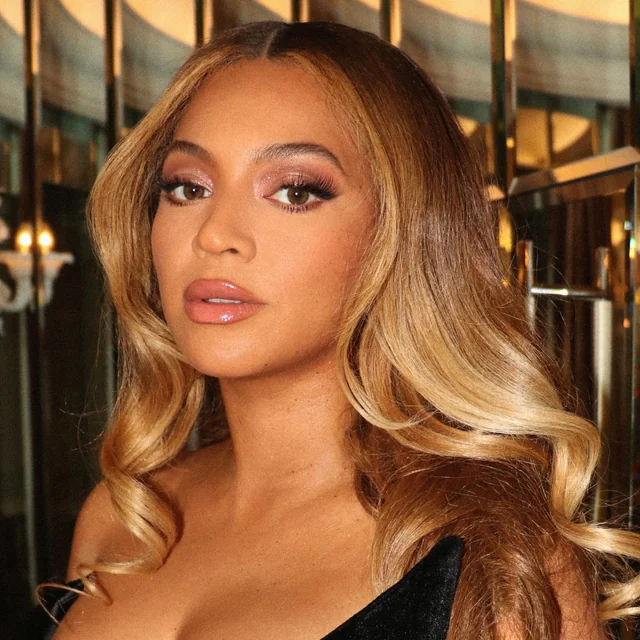
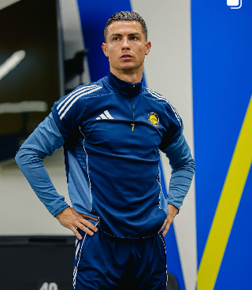

Баланс на
тарелке

Рецепты
Информация про ПП

🥬 Правильное питание — это не строгие диеты, а сбалансированный рацион, который даёт организму всё необходимое для энергии,
здоровья и хорошего самочувствия. Оно помогает поддерживать нормальный вес и улучшает работу внутренних органов .
💚Как питание влияет на организм
-Сердце и сосуды: продукты с клетчаткой, полезными жирами и витаминами снижают риск сердечно‑сосудистых заболеваний.
-Иммунитет: витамины A, C, E, цинк и антиоксиданты укрепляют защитные функции организма.
-Настроение и энергия: сбалансированное питание улучшает работу мозга, помогает бороться с усталостью и поддерживает стабильный эмоциональный фон.
-Долголетие: регулярное употребление полезных продуктов связано с более долгой и качественной жизнью.
👥Мнение знаменитостей:
 Дуэйн «Скала» Джонсон — один из самых узнаваемых актёров мира — придерживается строгого, но сбалансированного рациона: много белка, сложные углеводы, овощи. Он подчёркивает, что питание — это «топливо для дисциплины и энергии».
Дуэйн «Скала» Джонсон — один из самых узнаваемых актёров мира — придерживается строгого, но сбалансированного рациона: много белка, сложные углеводы, овощи. Он подчёркивает, что питание — это «топливо для дисциплины и энергии».

Бейонсе рассказывает, что её выносливость на сцене — результат растительного питания, контроля сахара и акцента на цельных продуктах.
Криштиану Роналду — один из самых известных футболистов планеты — говорит, что его форма на 90% зависит от питания. Он ест рыбу, овощи, цельные злаки и полностью избегает сладких газировок.⚕️Советы врачей:
-Ешьте разнообразно: чем больше натуральных цветов на тарелке, тем лучше.
-Делайте акцент на овощах, фруктах, белке, цельных злаках и полезных жирах.
-Ограничивайте сахар, фастфуд и переработанные продукты.
-Пейте достаточно воды и соблюдайте режим.
-Прислушивайтесь к телу: ешьте осознанно, без переедания.